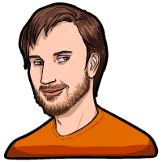
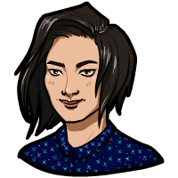

Innersloth es un estudio de desarrollo de videojuegos con sede en Redmond, Washington, más notable por crear el juego Among Us y The Henry Stickmin Collection. Crean juegos para PC, macOS y dispositivos móviles.
DESARROLLADORES |
||
|---|---|---|
|

Forest W.
¡Hola, soy tu programador de confianza! Yo me encargo de la parte comercial de las cosas en InnerSloth. Cuando no estoy programando (básicamente siempre), disfruto mucho de la escalada. No publico mucho en Internet, pero siempre estoy abierto a preguntas sobre lo que estamos haciendo y cómo se hace. |

Marcus B.
¡Hola! Soy artista, animador y diseñador de juegos aquí en InnerSloth. ¡Puede que me conozcas como Puffballs United, el creador de la saga de Henry Stickmin! Trabajé en Among Us y recientemente terminé la colección de Henry Stickmin. También trabajé en Dig2China y varios juegos cancelados;) He querido hacer juegos desde que tenía 8 años. La tecnología creció hasta el punto de que en realidad era posible para mí y no solo un sueño. Juego muchos juegos aparte. |

Amy L.
¡Hola! Soy la otra artista aquí en InnerSloth. ¡También organizo las tareas en general para cualquier otra cosa que necesite hacer! ¡Trabajé en Among Us y actualmente estoy trabajando en el desarrollo de productos y futuros juegos en Innersloth! En mi tiempo libre disfruto de la fotografía, más dibujo, tomar siestas y salir con amigos. |